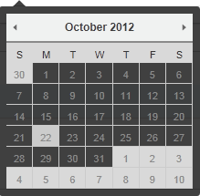
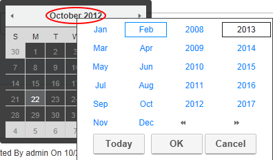
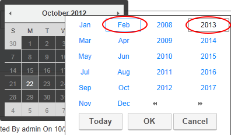
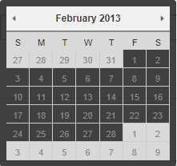
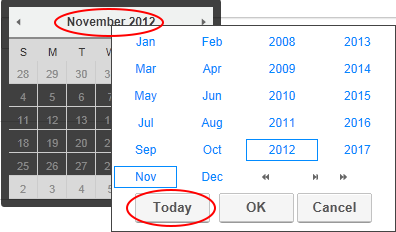
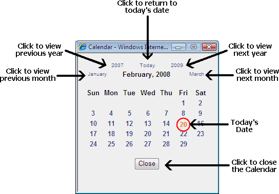

Working with the Calendar
The Calendar is an ASP.Net control widely used to select and maintain dates in module content, module settings, page settings, Admin Console, etc.
The Calendar is typically accessed by clicking or the Calendar button, however some modules have other link names. E.g. Events module displays the View Date link.
button, however some modules have other link names. E.g. Events module displays the View Date link.
Default Calendar
The default Calendar control is used throughout the DNN Framework and in a growing number of modules.
To view the Calendar, click the Calendar link or the Calendar button. The current date is highlighted in a lighter gray. i.e. The current date on the below Calendar is 22 October, 2012.

Step One: Locating the required date
- Modifying the Month and/or Year:
- Click on the Month Year information located above the monthly calendar. This will open a popup list of months and years.

- Optional. If the required year isn't displayed, use the Double Right Arrow or Double Left Arrow buttons to view the other years.
- Select the required month and/or year.

- Click the OK button to select. This will close the popup list with the selected month/year calendar displayed, allowing you to choose the required date.

- Viewing Today's Date:
- Click on the Month Year information located above the monthly calendar.
- Click the Today button to view the current month/year with Today's date.

- Navigating to Other Months:
- Click the Left Arrow button above the calendar month to view the calendar for the previous month.
- Click the Right Arrow button above the calendar month to view the calendar for the next month.
Step Two: Selecting the Required Date
- To Select a Date: Click on the date cell in the calendar. This will close the calendar and the selected date will be displayed in the associated text box.
Note: You may be unable to select dates prior to today, depending on where the Calendar is in use.
- To close the Calendar without selecting a Date: Click off the calendar.
Module Calendar
Several DNN Project modules use the Calendar control that was standard in previous versions on DNN. These modules are currently being updated to use the default calendar.

The following options are available to locate the required date using the calendar:
- Click the Calendar link or the Calendar
 button.
button.
- To locate the required date, perform any of the following options:
- Go to the Previous Year: Click the previous year (E.g. 2007) located at the top left of the calendar.
- Go to Today's Date: Click Today located in the top center of the calendar to return to the current month. Today's date is displayed as red.
- Go to the Next Year: Click next year (E.g. 2009) located at the top right of the calendar.
- Go to the Previous Month: Click the previous month (E.g. January) located to the left of the current month.
- Go to the Next Month: Click the next month (E.g. March) located to the right of the current month.
- Once you have located the required date the following options are available:
- To Select a Date: Click on the date in the calendar. The calendar will close and the date will be selected.
- To close the Calendar without selecting a Date: Click the Close button located below the calendar. The calendar will close and no date will be selected.